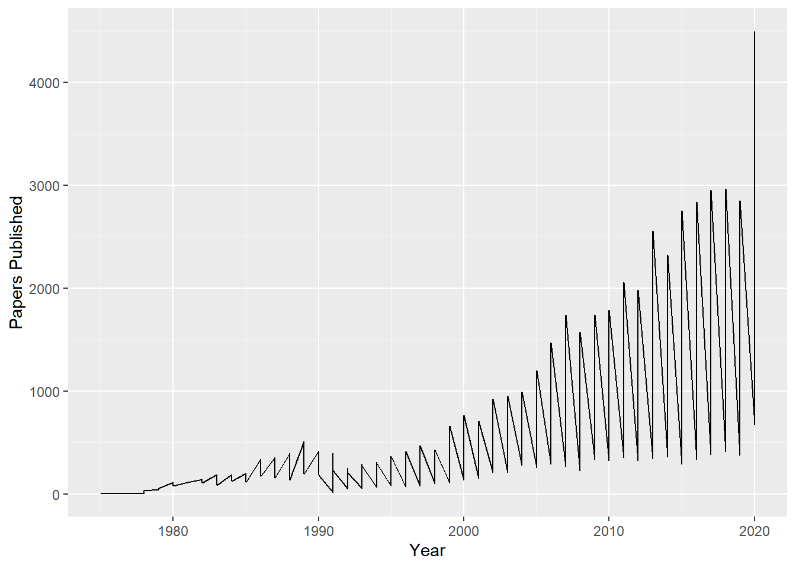
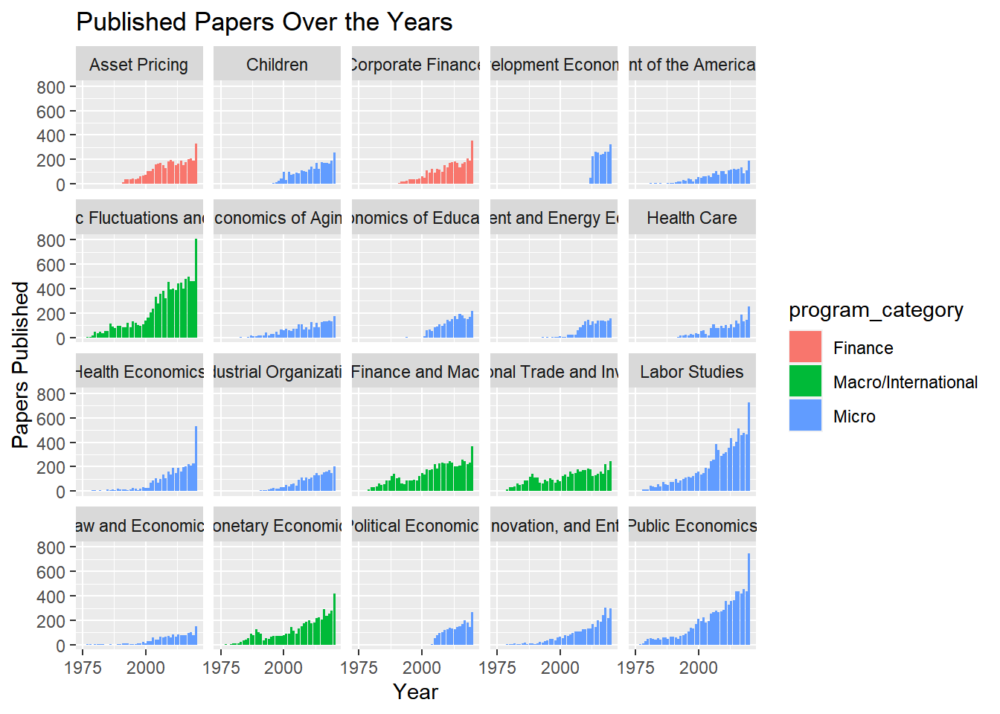
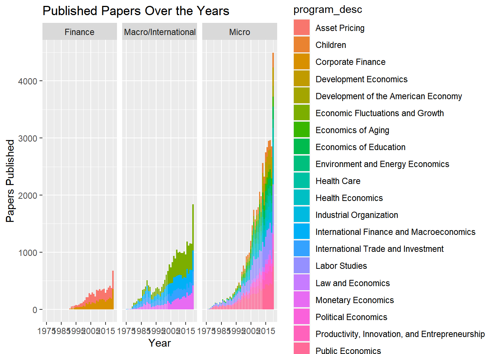

#Loading tidyverse and other libraries
Get tidytuesday data.
installed.packages("tidytuesdayR")## Package LibPath Version Priority Depends Imports LinkingTo Suggests
## Enhances License License_is_FOSS License_restricts_use OS_type Archs
## MD5sum NeedsCompilation Builtlibrary(tidytuesdayR)
# Get the Data
# Read in with tidytuesdayR package
# Install from CRAN via: install.packages("tidytuesdayR")
# This loads the readme and all the datasets for the week of interest
# Either ISO-8601 date or year/week works!
#tuesdata <- tidytuesdayR::tt_load('2021-09-28')
#tuesdata <- tidytuesdayR::tt_load(2021, week = 40)
#papers <- tuesdata$papers
# Or read in the data manually
papers <- readr::read_csv('https://raw.githubusercontent.com/rfordatascience/tidytuesday/master/data/2021/2021-09-28/papers.csv')## Rows: 29434 Columns: 4## -- Column specification --------------------------------------------------------
## Delimiter: ","
## chr (2): paper, title
## dbl (2): year, month##
## i Use `spec()` to retrieve the full column specification for this data.
## i Specify the column types or set `show_col_types = FALSE` to quiet this message.authors <- readr::read_csv('https://raw.githubusercontent.com/rfordatascience/tidytuesday/master/data/2021/2021-09-28/authors.csv')## Rows: 15437 Columns: 4## -- Column specification --------------------------------------------------------
## Delimiter: ","
## chr (4): author, name, user_nber, user_repec##
## i Use `spec()` to retrieve the full column specification for this data.
## i Specify the column types or set `show_col_types = FALSE` to quiet this message.programs <- readr::read_csv('https://raw.githubusercontent.com/rfordatascience/tidytuesday/master/data/2021/2021-09-28/programs.csv')## Rows: 21 Columns: 3## -- Column specification --------------------------------------------------------
## Delimiter: ","
## chr (3): program, program_desc, program_category##
## i Use `spec()` to retrieve the full column specification for this data.
## i Specify the column types or set `show_col_types = FALSE` to quiet this message.paper_authors <- readr::read_csv('https://raw.githubusercontent.com/rfordatascience/tidytuesday/master/data/2021/2021-09-28/paper_authors.csv')## Rows: 67090 Columns: 2## -- Column specification --------------------------------------------------------
## Delimiter: ","
## chr (2): paper, author##
## i Use `spec()` to retrieve the full column specification for this data.
## i Specify the column types or set `show_col_types = FALSE` to quiet this message.paper_programs <- readr::read_csv('https://raw.githubusercontent.com/rfordatascience/tidytuesday/master/data/2021/2021-09-28/paper_programs.csv')## Rows: 53996 Columns: 2## -- Column specification --------------------------------------------------------
## Delimiter: ","
## chr (2): paper, program##
## i Use `spec()` to retrieve the full column specification for this data.
## i Specify the column types or set `show_col_types = FALSE` to quiet this message.Installing didn’t work so I loaded the data in manually.
#viewing the data
summary(authors)## author name user_nber user_repec
## Length:15437 Length:15437 Length:15437 Length:15437
## Class :character Class :character Class :character Class :character
## Mode :character Mode :character Mode :character Mode :charactersummary(paper_authors)## paper author
## Length:67090 Length:67090
## Class :character Class :character
## Mode :character Mode :charactersummary(paper_programs)## paper program
## Length:53996 Length:53996
## Class :character Class :character
## Mode :character Mode :charactersummary(papers)## paper year month title
## Length:29434 Min. :1973 Min. : 1.000 Length:29434
## Class :character 1st Qu.:1999 1st Qu.: 4.000 Class :character
## Mode :character Median :2008 Median : 7.000 Mode :character
## Mean :2006 Mean : 6.534
## 3rd Qu.:2015 3rd Qu.: 9.000
## Max. :2021 Max. :12.000summary(programs)## program program_desc program_category
## Length:21 Length:21 Length:21
## Class :character Class :character Class :character
## Mode :character Mode :character Mode :characterSummaries show that there are
#Data wrangling
##Merge all of the data together
allthethings<-full_join(papers, paper_programs, by = "paper") %>%
full_join(paper_authors, by="paper") %>%
full_join(authors, by= "author")%>%
full_join(programs, by="program")%>%
drop_na() #remove NA data
summary(allthethings)## paper year month title
## Length:82091 Min. :1975 Min. : 1.000 Length:82091
## Class :character 1st Qu.:2005 1st Qu.: 4.000 Class :character
## Mode :character Median :2012 Median : 6.000 Mode :character
## Mean :2010 Mean : 6.492
## 3rd Qu.:2017 3rd Qu.: 9.000
## Max. :2021 Max. :12.000
## program author name user_nber
## Length:82091 Length:82091 Length:82091 Length:82091
## Class :character Class :character Class :character Class :character
## Mode :character Mode :character Mode :character Mode :character
##
##
##
## user_repec program_desc program_category
## Length:82091 Length:82091 Length:82091
## Class :character Class :character Class :character
## Mode :character Mode :character Mode :character
##
##
## ##Shape up the data using dyplr.
data<-allthethings%>%
select(year, month,program_category, program, program_desc)%>% #select for points of interests
drop_na()%>% #remove rows with NA
mutate(program_category=as.factor(program_category), program=as.factor(program), program_desc=as.factor(program_desc)) #turn characters into factors
summary(data)## year month program_category program
## Min. :1975 Min. : 1.000 Finance : 7398 EFG : 9985
## 1st Qu.:2005 1st Qu.: 4.000 Macro/International:26421 LS : 8994
## Median :2012 Median : 6.000 Micro :48272 PE : 8763
## Mean :2010 Mean : 6.492 IFM : 6266
## 3rd Qu.:2017 3rd Qu.: 9.000 ME : 5198
## Max. :2021 Max. :12.000 ITI : 4972
## (Other):37913
## program_desc
## Economic Fluctuations and Growth : 9985
## Labor Studies : 8994
## Public Economics : 8763
## International Finance and Macroeconomics: 6266
## Monetary Economics : 5198
## International Trade and Investment : 4972
## (Other) :37913##Play with some graphics
Papers published throughout the years
CountedCats<-data%>%
group_by(year,program_category)%>%
count(program_category)
CountedCats%>%
filter(year!="2021")%>%
ggplot(aes(year,n))+
geom_path(aes(group="program_category"))+
labs(x="Year", y="Papers Published")
str(data)## tibble [82,091 x 5] (S3: tbl_df/tbl/data.frame)
## $ year : num [1:82091] 1975 1975 1976 1976 1976 ...
## $ month : num [1:82091] 5 5 3 3 3 4 10 8 7 1 ...
## $ program_category: Factor w/ 3 levels "Finance","Macro/International",..: 2 2 3 2 2 3 3 3 2 3 ...
## $ program : Factor w/ 20 levels "AG","AP","CF",..: 12 14 11 12 14 11 16 16 17 18 ...
## $ program_desc : Factor w/ 20 levels "Asset Pricing",..: 13 14 11 13 14 11 15 15 17 20 ...data%>%
filter(year!="2021")%>%
group_by(year, program_desc)%>%
count(program_category)%>%
ggplot(aes(year, n, fill=program_category))+
geom_bar(position = "stack", stat = "identity")+
scale_x_continuous(breaks = seq(1975, 2020, 25 ))+
facet_wrap(~program_desc)+
labs(x="Year", y="Papers Published", title="Published Papers Over the Years")
data%>%
filter(year!="2021")%>%
group_by(year, program_category)%>%
count(program_desc)%>%
ggplot(aes(year, n, fill=program_desc))+
geom_bar(position = "stack", stat = "identity")+
labs(x="Year", y="Papers Published", title="Published Papers Over the Years")+
scale_x_continuous(breaks = seq(1975, 2020, 10 ))+
facet_wrap(~program_category)